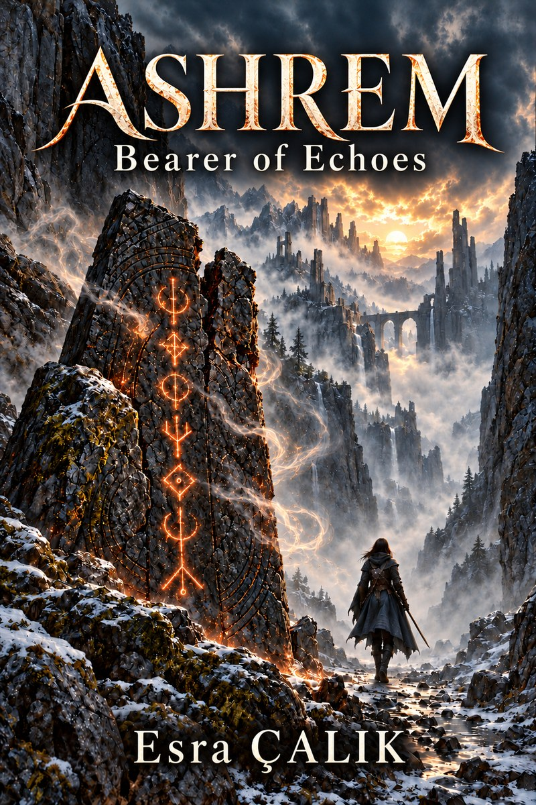

Esra Çalık · Author
Some power
takes a memory.
Enter the world of ASHREM, where a monster hunter carries fragments of lives she cannot remember living.
Discover ASHREM
The book
ASHREM
Bearer of Echoes
Dark fantasy · Book one
Every hunt leaves a scar.
Some take a memory.
Misanka earns her living killing monsters. The seven runes beneath her skin help her survive, but their power comes at a cost: pieces of her past disappear, and fragments of unfamiliar lives rise in their place.
When a hunt uncovers a black stone marked with symbols like her own, she finds a trail that might lead to answers. Following it means trusting Nelo, a man who can read forgotten languages and has good reason to conceal his name.
He is an exiled prince. He wants his throne back. She wants to know what was done to her.
Through abandoned mines, forbidden records, and a kingdom divided by competing claims to justice, their search draws them closer to a truth others have worked to bury.
But with every memory she loses, Misanka risks forgetting why she began.
View on AmazonAbout the author
Esra Çalık
Esra Çalık is the author of ASHREM: Bearer of Echoes. She is a graduate of English Language and Literature at Artvin Çoruh University.
Her dark fantasy fiction explores memory, identity, and the cost of power through characters whose choices rarely come with easy answers.
Get in touch
Contact
For reader messages and enquiries about Esra’s writing:
esraaaaemree@gmail.com